Observations:
A model of the solar system needs to account for these observations.
We remember the jeans mass from PHYS263: \[M_J=\left(\frac{5kT}{Gm}\right)^{3/2}\left(\frac{3}{4\pi\rho}\right)^{1/2}\] In reality clouds aren’t typically spherical or uniform in temperature or density. They typically rotate, and contain magnetic fields. There are also external influences responsible for actually triggering collapse. e.g. a shock wave from a supernova could trigger collapse by increasing local densities to change the Jean’s mass condition.
Laplace demonstrated that a rotating sphere of gas eventually flattens to a spinning disk. As matter contracts towards the centre, the disc starts to spin faster due to the conservation of angular momentum. We have the classic angular momentum formula \[\vb{L}=\sum_i\vb{r}_i\times m_i\vb{v}_i.\]
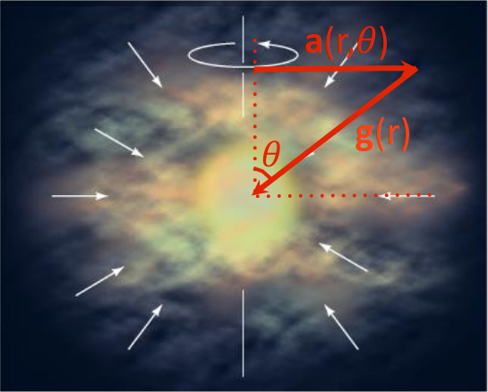
We have the gravitational acceleration \[\vb{g}(r)=-\frac{GM}{r^2}\vu{r},\] and in the frame rotating with angular velocity \(\omega\), we have a centrifugal acceleration \(a=r_\perp\omega^2=r\omega^2\sin\theta\). In vector notation it is \[\vb{a}_\text{c.f.}(r,\theta)=r\omega^2\sin\theta\underbrace{(\sin\theta\;\vu{r}+\cos\theta\;\vu*{\theta})}_{\vu{r}_\perp}\] Thus the net acceleration is \[\vb{a}_\text{net}(r,\theta)=r\omega^2\sin\theta(\sin\theta\;\vu{r}+\cos\theta\;\vu*{\theta})-\frac{GM}{r^2}\vu{r}\]
Consider a stationary element of gas of density \(\rho\) and cross sectional area \(A\) at a vertical position between \(z\) and \(z+\Delta z\). The weight of this element \(mg=\rho Vg=\rho A\Delta zg\) is balanced by the forced exerted on the gas from above and below \[\rho A\Delta zg=P_\text{bottom}A-P_\text{top}A\] we can express this as \[\rho\Delta zg=-\Delta P\implies\boxed{\dv{P}{z}=-\rho g}\] This is the equation of hydrostatic equilibrium. For the disk however, it is not a simple flat shape.
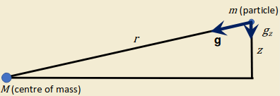
\[\dv{P}{z}=-\rho g_z=-\rho\frac{GM}{r^2}\underbrace{\frac{z}{r}}_{\sin\theta}\] If we assume ideal gas at temperature \(T\), then \(P=nKT\) with \(n=\rho/m\), then \[\frac{kT}{m}\dv{\rho}{z}=-\rho\frac{GM}{r^3}z\implies\boxed{\rho=\rho_0\exp\left[-\frac{GMm}{2kTr^3}z^2\right]}\] We can define \(H=\sqrt{2kT/GMm}\;r^{3/2}\) s.t. \(\rho=\rho_0\exp[-(z/H)^2]\), where \(H\) is the "scale thickness" which is the height above the central plane of the disk at which the density has dropped to \(1/e\) of the central density.
We can assume the relative masses of the proto-Sun and surrounding nebula. We assume that the mass of the proto-Sun is \(\sim1.0 M_\odot\).
This is when we assume the mass of the nebula around the proto-Sun as \(\sim0.01 M_\odot\). This is equivalent to present total mass of the planets plus enough H, He & icy material to give the overall composition the same as the Sun today. We have found that the
The mass of present day planets, plus asteroids and comets is \(\lt0.0015 M_\odot\). Therefore a proportion of the total original H and He has been lost.
This leaves us with another major problem. Only about \(1\%\) of the mass of the solar system is contained within the planets. The planets account for \(\gt99\%\) of the angular momentum of the solar system A simple view of the solar system suggests mass (and hence angular momentum) should be concentrated at the centre \(\to\) The “angular momentum problem”.
The massive solar nebula model assumes that mass of the nebula around proto-Sun \(\sim1.0 M_\odot\). This "extra" mass, is assumed to have carried the excess angular momentum away. For the sun to have so little angular momentum, the matter that formed the proto-Sun must have transferred most of its angular momentum to the surrounding disc. Some of this material must then have been lost from the solar system. This cant have happened if every particle in the solar nebula was moving independently in orbits dictated by Kepler's laws - they must have interactions. There are three processes suggested to explain angular momentum transport:
Assume total angular momentum of sun is \(L=M_\odot vR_\odot\). Since \(v=r\omega\) it follows that \(L=M_\odot R_\odot^2\omega\). The rate of loss of angular momentum is thus \[\dv{L}{t}=\dv{M_\odot}{t}R_\odot^2\omega.\] The solar wind therefore carries away angular momentum. We know that solar-type stars have strong solar winds in youth, which clear away gas and dust in the disc.
Material in the inner part of the disc is ionised by the solar radiation. The Sun’s magnetic field couples it to the plasma, which is spun up to the solar rotation rate. This increase in angular momentum of the ionised disc corresponds to a decrease in angular momentum of the Sun. The spin rate of the star is reduced as angular momentum is transferred outwards. The effect is limited to the inner regions of the disc where the magnetic field strength is high. The effect is also limited to where the magnetic pressure dominates over the gas' dynamic pressure \[P_B=\frac{B^2}{2\mu_0}\gt P_G=\frac{1}{2}\rho v^2.\] Since the magnetic field strength varies with distance \((B=B_0R_\odot^2/r^2)\), this leads to an expression for the Alfven radius \(r_A\) within which the solar wind co-rotates with the Sun as if there was solid body rotation. \[\left(\frac{r_A}{R_\odot}\right)^2=\frac{4\pi B_0^2R_\odot^2}{\mu_0\nu\dot{M}}\]
Unencumbered, particles farther out in the disc will move about the proto-Sun in Keplerian orbits, however, collisions between particles produces a viscous drag within the disc. Material in the outer part is sped up driving it outwards, carrying angular momentum with it. Material in the inner part is slowed down, such that it falls inward onto the proto-Sun. Consider two bodies in circular orbits. Their total angular momentum is \[L=\sum_im_ir_iv_i=\sqrt{GM}(m_1\sqrt{r_1}+m_2\sqrt{r_2}).\] If contact between the particles occurs, the radii (and hence the angular momentum of each particle) will change, whilst the total angular momentum is conserved. The relation between the perturbations is \[m_1\frac{\Delta r_1}{\sqrt{r_1}}=-m_2\frac{\Delta r_2}{\sqrt{r_2}}.\] The perturbation causes the energy equation to become \[E=-\frac{GM}{2}\left(\frac{m_1}{r_1}+\frac{m_2}{r_2}\right),\] so we find \[\Delta E=-\frac{GMm_1\Delta r_1}{2r_1^2}\left[\left(\frac{r_1}{r_2}\right)^{3/2}-1\right].\] This means we can reduce the energy of the system by exchanging angular momentum such that angular momentum moves outwards whilst mass moves inwards. Some of the mass in the disk falls inward onto the star with reduced angular momentum, while the mass moving outward carries increased angular momentum.
There are four key recognised stages:
There are six main stages:
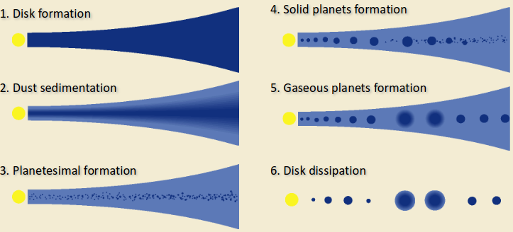
Formation of planets require "seeds". The process of sowing seeds is condensation, where solid or liquid particles emerge from a gas. Condensation is temperature dependent. When the temperature is low enough molecules of different compounds are formed.
After condensation, growth of solid particles occurs due to collisions. Accretion is the growth of grains through collisions the real planet building process. Chondrules are the ‘seed’ particles - about 1 mm in size - along with other, porous molecular aggregates held together by Van der Waals forces. Accretion proceeds in two ways
Consider spherical particle of radius \(r\) and geometric cross section \(\sigma=\pi r^2\). If the relative velocity of the particles is \(v\) then volume (\(V\)) swept out in time \(t\) is: \(V=\sigma vt\). The total number of particles \(N\) encountered in the time \(t\) is \(N=Vn=n\sigma vt=\pi r^2nvt\) where \(n\) is the number density of particles. Assuming all particles contribute the the growth rate then the mass grows as \[\dv{M}{t}=m\dv{N}{t}=mn\pi r^2v=\rho\pi r^2v\] where \(m\) is the mass of a particle and \(\rho\) is the density of particles.
Objects formed by geometric accretion are called planetesimals. They act as the seeds of planet formation. Once planetesimals had grown to a few kilometres, collisions become destructive, making further growth more difficult. Gravitational accretion then begins to dominate. This then accretes planetesimals to form protoplanets.
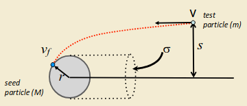
Consider a test particle of mass \(m\) approaching a seed particle of mass \(M\), radius \(r\), with impact parameter \(s\) and relative velocity \(v\). The gravitational pull of the seed particle captures the test particle, for certain combinations of \(v\) and \(s\). We first use conservation of angular momentum \(mv_fr=mvs\), and conservation of energy \(\frac{1}{2}mv^2=\frac{1}{2}mv^2_f-GMm/r\) to find \(s\): \[s^2=r^2+\frac{2GMr}{v^2}.\] We now consider the seed particle of radius \(r\) and impact cross section
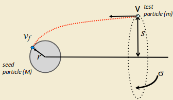
\[\sigma=\pi s^2=\pi\left[r^2+\frac{2GMr}{v^2}\right].\] We now can follow same approach for geometric accretion: \[\dv{M}{t}=m\dv{N}{t}=\pi s^2vmn=\sigma v\rho\] so finally \[\dot{M}=\pi v\rho r^2\left[1+\frac{2GM}{rv^2}\right].\] Since \(M\propto r^3\), then \(\dot{M}\propto r^4\). This leads to runaway growth of the planetesimal.
These processes result in planetesimals of tens of kilometres in size in less than a million years. Time scale growth can be calculated by \[\tau_\text{growth}\propto\left(\dv{M}{t}\right)^{-1}\] Not only do bigger planetesimals grow the fastest, but smaller planetesimals are quickly destroyed by fast collisions and turned into smaller fragments. \(\implies\) Typically one object will dominate a region.
Three stages for gas giant formation via core nucleated accretion model:
Small amount of metals and rocks in early solar nebula. Rocky materials do not aggregate together easily so the inner planets formed slowly. By the time inner planetesimals were formed and had significant gravitational fields, the nebula had been cleared out by solar wind. \(\implies\) No nebular gas present to capture a significant atmosphere.
There was great quantities of ice and gas at \(\gt 3\;\text{AU}\). Ices have a large cross-sectional are, therefore large cores formed. This is a less volatile process, so large gas envelopes gradually accreted to the cores.
There are three main sources of heat:
The initial internal temperature is due to accretion. By considering the accretion of infinitesimally small amounts of mass falling from infinity onto a planetesimal of mass \(M\), the total accretion energy of a sphere of radius \(R\) can be approximated. The kinetic energy (and hence heat energy) derived from the gravitational potential energy of an element of infalling matter is \[\Delta U=\frac{GM\Delta m}{r}\to U=\int^R_0\frac{GM(r)}{r}\dd{m}=\frac{16}{15}\pi^2\rho^2 GR^5\] where \(M\) is the mass already accreted, \(\Delta m\) is the mass of the infalling particle, and \(r\) is their separation upon impact. Equivalent temperature change can be estimated by considering the specific heat capacity \(C_P\) of a planet (the amount of heat energy required to raise unit mass of material by \(1\text{K}\)). \(\Delta T=U/C_PM\). If we consider specific heat capacity, \(C_P\), of a planet we can deduce the maximum temperature that a planetary interior could reach as a result of accretion.
Three main mechanisms
Heat content of planet: \[E\propto M\sim\frac{4}{3}\pi R^3\rho\] Cooling rate - can only escape from surface: \[\dv{E}{t}\propto A=4\pi R^2\] Therefore cooling time is: \[\tau_\text{cooling}\propto\frac{E}{\dv{E}{t}}\sim R\] Large bodies take longer to cool. Explains why small bodies cooled early, have thicker crusts, no magnetic fields, and crater-rich surfaces.
Primary (or primitive) atmospheres are captured from the solar nebula gas. Did Earth have a primary atmosphere? Consider Neon, its heavy and nonreactive. The abundance in the nebula gas (in the sun) is 0.12%. In Earths atmosphere its 0.0018%, therefore the primitive atmosphere is \(\sim1.5\%\) of the current atmosphere.
The ability of a planet of mass \(M\) and radius \(R\) to retain an atmosphere is dependent on the planet’s gravity and the thermal energy of the atmospheric particles. To escape gravity, a particle must have velocity: \[v_\text{esc}=\sqrt{\frac{2GM}{R}}.\] with that velocity coming from the thermal energy of an atmospheric particle: \[\frac{1}{2}mv_\text{av}^2=\frac{3}{2}kT\implies v_\text{av}=\sqrt{\frac{3kT}{m}}.\] We can calculate that for a nebula of \(T=500\;\text{K}\), a hydrogen molecule has \(v_\text{av}=2.5\;\text{km/s}\). \(v_\text{esc}=11.2\;\text{km/s}\), so we might conclude that the hydrogen cannot escape, and Earth should have retained its primary atmosphere. We have to consider the distribution of speeds. Even if the average speed is too low to escape, a very small fraction (0.5%) of the molecules are moving more than twice as fast. Typically its found that a planet can hold onto its atmosphere if the escape velocity is 4-6 times greater than the average kinetic velocity.
A good rule of thumb is that we need an escape velocity twice as large as the orbital velocity in order to capture orbiting gas. Orbital velocity at Earth's heliospheric distance is \[v_0\approx\sqrt{\frac{GM_\odot}{1\;\text{AU}}}\approx 30\;\text{km/s}\] Compare this to Earth’s escape velocity of \(v_\text{esc}=11.2\;\text{km/s}\) and we can see that Earth is very unlikely to have ever captured a significant primary atmosphere. This is consistent with the observations of low neon abundance in Earth's atmosphere.
If present day atmospheres were not captured from the nebula, where did they come from? Gases are vented through volcanic eruptions, or gases delivered by e.g. cometary impacts.
Hydrostatic Equilibrium: The balance between the thermal motion of the atmospheric molecules (pressure) and the force of the planet’s gravity determines the structure of a planet’s atmosphere. Equilibrium Temperature: The thermal energy is dependent on the temperature, which is determined by an ‘energy budget’ between heating due to absorption of solar radiation and the heat reflected by the planet back into space.
As discussed before we have the equation for H.E. \[\dv{P}{z}=-\rho g\] If we approximate the atmosphere to be an isothermal ideal gas where \(P=nkT\) (\(n=N/V\)) and \(\rho=nm\) then the equation of hydrostatic equilibrium becomes: \[\dv{P}{z}=-\frac{mP}{kT}g=-\frac{P}{H}\to\frac{\dd{P}}{P}=-\frac{\dd{z}}{H}\] where \(H=kT/mg\) is called the atmospheric scale height. Integrating yields: \[P=P_0\exp\left(-\frac{z}{H}\right)\]
The assumption that the atmosphere is isothermal is very wrong. It varies with height. Instead we consider an adiabatic atmosphere and will consider a parcel of air rising as it expands adiabatically. The rate of change in temperature with altitude is given by the lapse rate \(\Gamma\;(\text{Km}^{-1})\): \[\Gamma=\dv{T}{z}=\frac{-g}{c_p}\to T(z)=T_0+\Gamma z\] We can then repeat the derivation of the pressure profile using variable temperature: \[\dv{P}{z}=-\frac{mP}{kT}g=-\frac{mP}{k(T_0+\Gamma z)}\] we solve this to find \[P=P_0\left(1+\frac{\Gamma z}{T_0}\right)^{-mg/k\Gamma}\]
The total thermal energy of an atmosphere gives rise to emission of radiated power given by the Stefan-Boltzmann law: \(P=4\pi R^2\sigma\epsilon T^4\) where the emissivity, \(\epsilon\), is the planet’s effectiveness as a thermal emitter. If the emitted power can be measured, the effective temperature of the planet can be measured \[T_\text{eff}=\left(\frac{P}{4\pi R^3\sigma\epsilon}\right)^{1/4}\] If solar insolation is the only source of atmospheric heating then the temperature can be estimated by considering the absorption and reradiation of the insolation. For the sun \(L_\odot=3.85\times 10^{26}\;[\text{W}]\) with \(F_\odot=\frac{L_\odot}{4\pi d^2_\odot}\). When the earth is illuminated by the sun some energy heats up the planet, and some is reflected. The ratio of the total radiation reflected or scattered by the object is called the bond albedo \(A_b\). Thus the absorbed fraction of the solar radiation is \[P_\text{in}=(1-A_b)F_\odot\pi R^2\] the re radiated power over the planet's entire surface is \[P_\text{out}=4\pi R^2\sigma\epsilon T^4\]By considering the balance between insolation and reradiation, we find the equilibrium temperature of the Earth is given by: \[T_\text{eq}^4=\frac{(1-A_b)F_\odot}{4\sigma\epsilon}\] For any planet, we must use \[T_\text{eq}^4=\frac{(1-A_b)F_\odot}{4\sigma\epsilon d^2_\text{AU}}\] If the planet is heated by additional sources then \(T_\text{eq}\neq T_\text{eff}\).
The absorption of solar radiation by an atmosphere is frequency dependent. The surface temperature of a planet can be raised substantially above its equilibrium temperature if its atmosphere is “optically thick” at infrared wavelengths. The atmosphere is “optically thin” at visible wavelengths so sunlight heats the surface. The warm surface radiates its heat at infrared wavelengths.
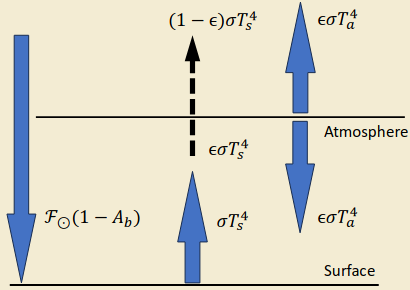
For \(\epsilon=1,\;T_s^4=2T_a^4\). Assumptions:
A more realistic treatment of radiative transport yields: \[T^4(\tau)=T_0^4\left(1+\frac{3\tau}{2}\right)\] where \(T(\tau)\) is the temperature at an optical depth, \(\tau\), and \(T_0\) is the temperature at the top of the atmosphere. Optical depth describes how transparent or opaque a medium is to radiation of a certain frequency. It is described by the Beer-Lambert law: \[I_\nu=I_{\nu0}\exp(-\tau_\nu)\] Optical depth can be described as the integrated effect of attenuation (absorption, reflection, scattering) over a specific path through a medium: \[\tau_\nu=\int_S\beta_\nu\dd{s}\] Where \(\beta_\nu\) is the attenuation coefficient. If it is constant, then \(\tau_\nu=\beta_\nu s\) and \[\frac{I_\nu}{I_{\nu 0}}=\exp(-\beta_\nu s)\] Thus, returning to the equation for temperature in an atmosphere \[T^4(\tau)=T_0^4\left(1+\frac{3\tau}{2}\right).\]
Can we explain the structure of the Earth's atmosphere?
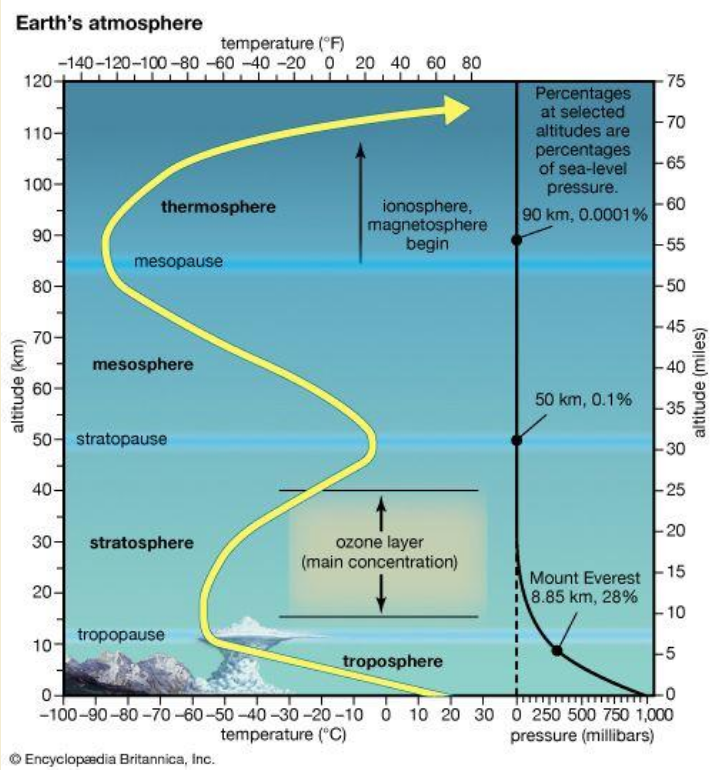
The upper atmosphere is heated by absorption of solar UV and X-ray radiation (dominant process). The day-night difference is highly pronounced.
The heliosphere is the region of space containing the solar wind that is bound by the heliopause.
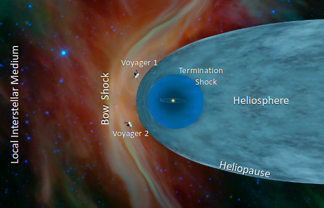
Termination shock is where the supersonic solar wind is slowed. Bow shock is a hypothesised phenomenon similar to the wake of a boats bow. It may be inhibited by strong interstellar magnetic fields.
We have \[\dv{P}{r}=-\rho g=-\frac{Pm}{kT}\frac{GM_\odot}{r^2}\] For the heliosphere we integrate from the solar surface to a radial distance \(r\): \[\begin{align} &\int_{P_0}^P\frac{\dd{P}}{P}=\frac{-GM_\odot m}{kT}\int_{R_\odot}^r\frac{\dd{r}}{r^2}\\ &\implies P=P_0\exp\left[\frac{GM_\odot m}{kT}\left(\frac{1}{r}-\frac{1}{R_\odot}\right)\right] \end{align}\] As \(r\to\infty, P\to \sim 10^{-6}\;\text{Pa}\). This implies finite pressure at large distances. The local interstellar medium (LISM) pressure of only \(\sim 10^{-14}\;\text{Pa}\) would not contain the corona. The gas pressure of the local interstellar medium is insufficient to contain a solar corona in hydrostatic equilibrium. Instead, the corona expands continuously outwards into the solar system to form the solar wind. Acceleration takes place within \(\sim107\;\text{km}\) of the Sun \((\sim 10 R_\odot)\) After this, solar wind speed remains constant with distance at about \(400\text{km s}^{-1}\). Plasma eventually confined by the local interstellar medium at distances of \(100-150\;\text{AU}\). This defines the boundary of the heliosphere.
A useful thought experiment to consider the creation of the IMF. Consider the Sun’s near magnetic field as approximately dipolar and embedded in a static plasma atmosphere. The initial field configuration is shown below. Switch on radial outflow everywhere at constant speed (and neglect the Sun’s rotation). The field, frozen-in to the solar wind plasma, will be carried radially out into the solar system.
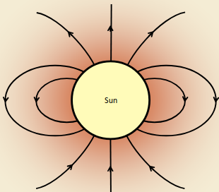
Aside: Frozen-in-flow (Alfven's Theorem)Particles remain associated with the same B-field lines for all time. Plasmas on different field lines do not mix.
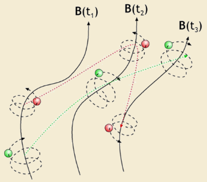
This is only an approximation to the actual flow. It applies when the field varies slowly in space and time compared with particle gyrofrequency and gyroperiod.
We can consider the motion of one field line at various times as it is carried outwards "frozen" into the plasma flow. After a long time, the field near the Sun points radially inwards or outwards, depending on the sense of the field at the Sun's surface.
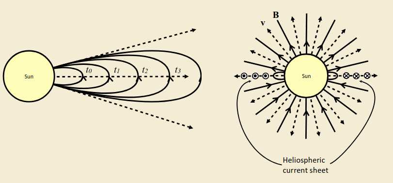
In reality the Sun rotates with a period of ~27 days. Each element of the solar wind moves radially out, but the feet of the field lines are frozen into the rotating Sun. The field lines are therefore wound into a spiral.
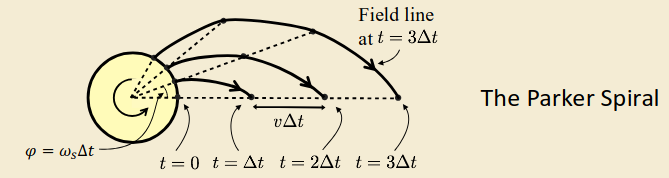
Consider two plasma elements emitted from the solar surface, separated by time \(\Delta t\), located at points 1 and 2 respectively.
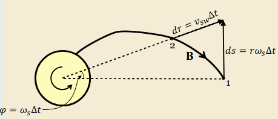
The points are separated in \(r\) by \(v_{sw}\Delta t\) and in \(\varphi\) by \(\omega_s\Delta t\). As the elements move to larger \(r\), \(\dd{r}\) remains constant whilst \(\dd{s}\) grows. By analysis of the components of \(\vb{B}\) we know that the field direction must follow the plasma flow: \[\begin{align} &\frac{B_\varphi}{B_r}=-\dv{s}{r}=-\frac{r\omega_s}{v_{sw}}\\ &\implies B_\varphi=-\frac{r\omega_s}{v_{sw}}B_r \end{align}\] Conservation of magnetic flux states that through any surface of radius \(r\), \(\vb{B}\cdot\vb{A}=\text{const}\). thus we have \[B_{rs}\pi R^2_s=B_r\pi r^2\] hence \[B_r=B_{rs}\left(\frac{R_s}{r}\right)^2\] so finally we have \[B_\varphi=-\frac{R_s\omega_s}{v_{sw}}B_{rs}\frac{R_s}{r}\]
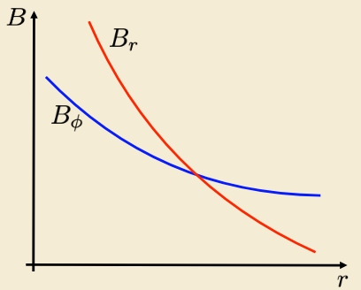
The solar wind exerts both a dynamic and magnetic pressure on objects. \[\begin{align} &\text{Magnetic:}\quad P_\text{mag}=\frac{B^2}{2\mu_0}\\ &\text{Dynamic:}\quad P_\text{dyn}=\rho v^2 \end{align}\] we can use the fact that the solar wind scales as \(1/r^2\) and measure the density at the Earth \(n_E\) as a basis: \[\rho=mn=mn_E\left(\frac{r_E}{r}\right)^2\] To determine the distance of equilibrium of the pressures from the sun we compute: \[\frac{B^2}{2\mu_0}=\rho v^2\implies r=\sqrt{\frac{B_{rs}^2R_s^2}{2r_E^2\mu_0n_em_pv_{sw}^2}}R_s\]
Coronal Mass Ejection: bubble of magnetic flux from Sun.
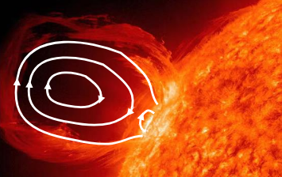
Break down of frozen-in condition occurs at field gradients / current sheet and introduces diffusion of the field lines through the plasma. When the fields are oppositely-directed at the boundary a null point exists. Here the field can disconnect and immediately "reconnect" through the boundary in a new configuration. Reconnected field lines contract along the boundary due to field line tension, allowing more field lines to diffuse in and reconnect.
A planetary magnetosphere is a cavity in the solar wind surrounding a planet. Usually they are produced by the presence of the planet’s magnetic field. In this case, the magnetosphere is the realm where the planet's magnetic field is present. An atmosphere is actually sufficient for a small magnetosphere to be produced! Planets with magnetic fields essentially have a dipole field, i.e. \(B(r)\propto 1/r^3\). Unmagnetised planets may or may not have an atmosphere. This provides three cases
Insulating material in a flowing plasma. Magnetic field diffuses through insulator. The body absorbs plasma particles. No upstream solar wind shock formed. Wake left in the plasma behind the body. Wake is dependent on:
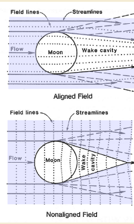
If the body has a conducting core, then there are additional effects:
Solar particles encounter the surface of the body and are either absorbed or bounce back. This can lead to evaporation and out-gassing of material, this pressure can balance the solar wind.
Solar wind is supersonic and thus forms a detached bow shock on the planets atmosphere. A magnetosheath forms beneath the bow shock, where the solar wind is deflected Within the magnetosheath, the solar wind dynamic pressure is transformed to magnetic pressure, as the IMF piles up at the ionopause. The ionopause occurs where the thermal pressure of the ionosphere equals the solar wind dynamic pressure: \(n_EkT=\rho_{sw}v_{sw}^2\). We can balance these forces to find the height of the ionopause \[(P_\text{atm}=P_0e^{-h/H})=(P_{sw}=\rho_{sw}v^2_{sw}=n_{sw}m_{sw}v_{sw}^2)\] thus \[h=H\ln\left(\frac{P_0}{n_{sw}m_{sw}v_{sw}^2}\right)\]
Planetary magnetic fields tend to be roughly dipolar. They are usually aligned closely with the planetary rotation axis. Consider the arrival of a solar wind "front" at the Earth • Solar wind / IMF are frozen-in. Earth’s field and plasma frozen-in. Current sheet formed between the two regimes.
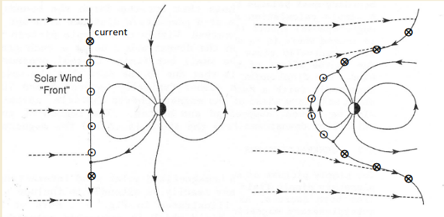
Solar wind particles approach the Earth with speed \(v_{sw}\) and number density \(n_p\), i.e. a flux of \[F=v_{sw}n_p\] and they encounter the magnetic field that they sense the Lorentz force and gyrate with radius \[r_g=\frac{m_pv_{sw}}{eB_{mp}}\] If the flux of protons approaching the boundary is \(v_{sw}n_p\) then number of protons traversing a section of boundary \(2r_g\) wide each second is: \[2r_gv_{sw}n_p=\frac{2m_pv_{sw}}{eB_{mp}}v_{sw}n_p\] This flux of protons corresponds to a current: \[I=\frac{2m_pn_pv_{sw}^2}{B_{mp}}\] We can use Ampere's law \(2\vb{B}_\text{sheet}=\mu_0I\) \[\frac{2B_\text{sheet}}{\mu_0}=\frac{2m_pv_{sw}^2}{B_{mp}}\to \frac{B_{mp}^2}{2\mu_0}=\frac{2B_{dipole}^2}{\mu_0}=m_pn_pv_{sw}^2\]
We can use conservation of momentum to find \[v_f-v_i=\Delta v=u\ln\left(\frac{m_i}{m_f}\right),\] where \(u\) is the speed of the exhaust gasses. To determine thrust we have the momentum of the ejected gasses \(p=m_gu\) and can find \[F=\dv{p}{t}=u\dv{m_g}{t},\] therefore the acceleration is \[a=\frac{F}{m}=\frac{F}{m_i-\dv{m_g}{t}t}.\]
The previous analysis assumes that there is no external force acting on the rocket. On lift-off from a planet, however, the force of gravity will apply an impulse: \[\dd{J}=F\dd{t}=-mg\dd{t}\] This impulse is equal to the change of momentum \[p_1-p_i=m\dd{v}+u\dd{m}=-mg\dd{t}\] thus we find \[\Delta v=u\ln\left(\frac{m_i}{m_f}\right)-g\Delta t\]
In this case, some of the rocket mass is shed part way through the launch. The rocket equation is then applied to each stage separately. E.g. consider the previous example as a 2-stage rocket, where the dry mass of the first stage is 10% of the total mass. Each stage is to provide half of the required delta-v which, including that required to overcome gravity – the "gravity loss" – is \[\frac{1}{2}(\Delta v+g\Delta t)\] For each stage: \[\text{Fuel }\%=1-\exp\left(\frac{-(\Delta v+g\Delta t)}{u}\right)\]
We have total orbital energy \[E=\frac{1}{2}mv^2-\frac{GMm}{r}=\frac{-GMm}{2a}\] and \[\begin{array}{l|l} \text{Circular} & v_\text{circ}=\sqrt{\frac{GM}{r}},\quad E=E_\text{min}\\\hline \text{Ellipse} & v_\text{circ}\lt v\lt\sqrt{2}v_\text{circ}\to v=\sqrt{\frac{2GM}{r}-\frac{GM}{a}},\quad E\lt0\\\hline \text{Parabolic} & v_\text{esc}=\sqrt{2}v_\text{circ},\quad E=0\\\hline \text{Hyperbolic} & v\gt v_\text{esc}\to\text{Escapes with }v_\infty\to v_\infty^2=-\frac{GM}{a}\quad E\gt 0 \end{array}\]
An example:
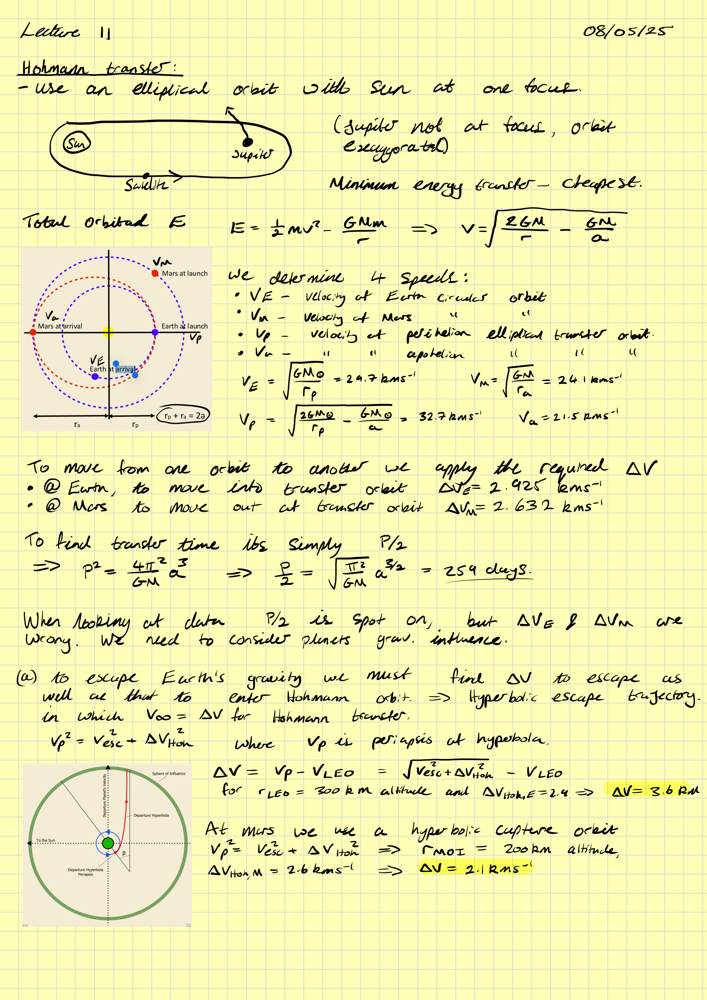
Again, by example:
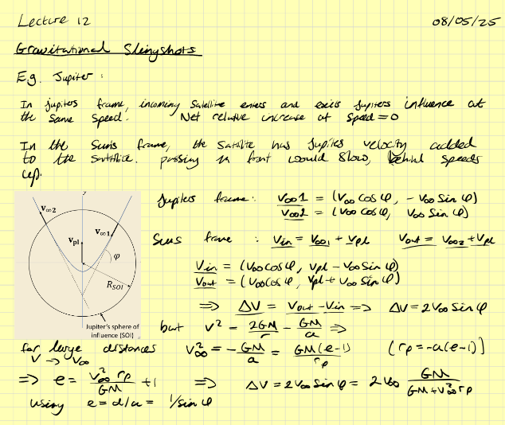
The force on an object (say the moon) is distributed over the entirety:
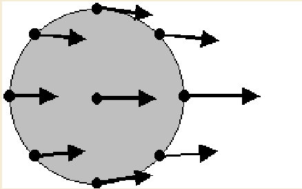
\[F=\frac{GM_Em_m}{r_{E-M}^2}\] If we view these forces with respect to the centre of the body (moon) we see a different picture
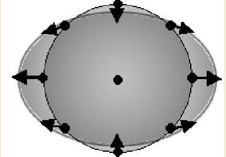
\[\dv{F}{r}=\frac{-2GM_Em_m}{r^3_{E-M}}\]
"The orbital radius below which tidal forces will cause a body, held together only by its own gravity, to disintegrate due to a second celestial body's tidal forces exceeding the first body's gravitational self-attraction."
\[\frac{GMm}{R^2}\lt\underbrace{\frac{2GMm}{r^3}R}_{dF/dr \times \text{distance}}\]